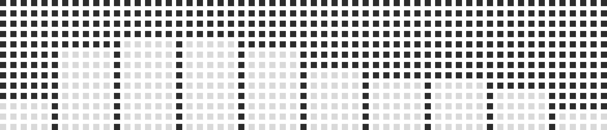
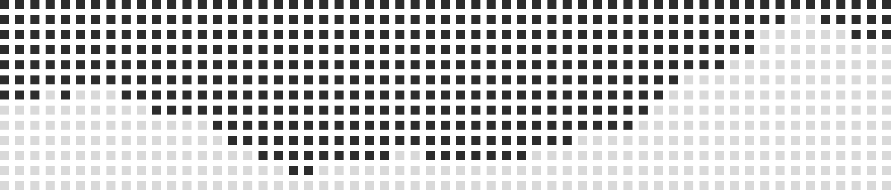

SAJU DATA
The Day Master
Decision Tendencies
10개 일간이 각각 어떤 결정 성향을 보이는지, 그 안에서 당신의 일간은 어떤 수치인지 비교해보세요.
무토 일간은 변화보다 안정을 택하는 경향이 강합니다.
아래는 10개 일간이 얼마나 자주 유지형 결정을 하는지 나타낸 분포예요.
무토는 모든 일간 중 이 경향이 가장 두드러져요.

Byeong Fire
Jeong Fire
Mu Earth
Gi Earth
Gyeong Metal
Sin Metal
Gap Wood
Eul Wood
Im Water
Gye Water
2026년, 무토 일간에게 변화가 더 자주 찾아오고 있습니다.
2020년부터 2023년까지 변화 시도가 눈에 띄게 줄었다가, 2024년부터 빠르게 올라오고 있어요. 올해 2026년은 불의 기운이 강한 해로, 무토 일간에게 평소보다 변화가 많이 찾아오는 시기예요.

20172018201920202021
20222023202420252026